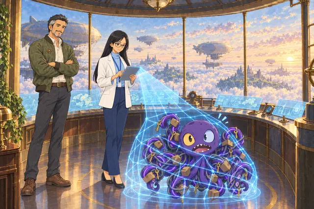
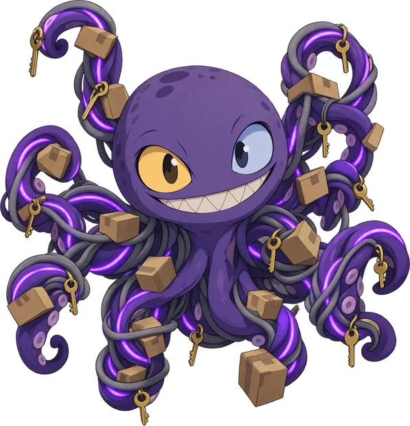
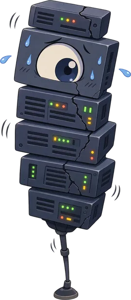
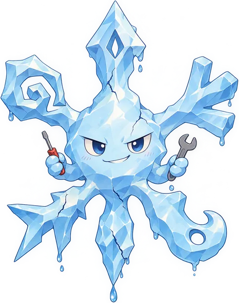
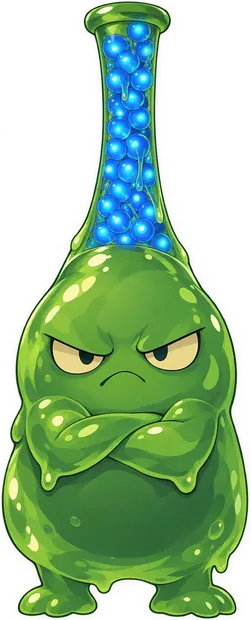

Two frameworks, one journey
They solve different problems, and they meet in the Azure landing zone.
🧭 Cloud Adoption Framework
The organization's journey, for decision makers: seven phases from Strategy to Manage. Its outcome is "an Azure landing zone and operational standards".
- Strategy · Plan · Ready · Adopt
- Govern · Secure · Manage
🏗️ Well-Architected Framework
For the team that designs one workload: five pillars, each with design principles, a checklist and tradeoffs, plus review tools.
- Reliability · Security · Cost Optimization
- Operational Excellence · Performance Efficiency
The episodes
One continuous story. Click or tap to advance, or press Auto-play and just watch. Each episode ends with a checkpoint question.
The voyage: the Cloud Adoption Framework
The Server Room Is Full
Why Contoso needs two frameworks, not one
Why Are We Flying?
CAF Strategy: motivations, mission, objectives
Count Every Crate
CAF Plan: operating model, skills, inventory, the eight strategies
Build the Harbor
CAF Ready: Azure landing zones, design areas, management groups

Roads, Gates and Docks
CAF Ready: hub-and-spoke networking and subscription vending

The Great Migration
CAF Adopt: migrate, modernize, build cloud-native

Rules of the Harbor
CAF Govern: guardrails with Azure Policy

Guards at Every Gate
CAF Secure: security through every phase, Zero Trust

The Control Tower
CAF Manage: Ready, Administer, Monitor, Protect
The shipwright's code: the Well-Architected Framework

The Five Pillars
WAF: workloads, pillars, tradeoffs and the review loop

When an Engine Fails
WAF Reliability: zone redundancy, health probes, recovery

Lock Every Hatch
WAF Security: one public door, private everything else

Fuel Wisely
WAF Cost Optimization: budgets, Advisor, rates and right-sizing

Same Every Time
WAF Operational Excellence: IaC, pipelines, safe deployments

Rush Hour
WAF Performance Efficiency: edge caching, cache-aside, autoscale
Land It Well
CAF and WAF together: the shop in its landing zone
The cast
The harbor and its airships are our picture of Azure, so the ideas are easier to remember. The lesson cards and diagrams use the real Azure names.
Dewi
Solution engineer at Contoso, put in charge of the cloud adoption work. Always asks: "Where does it say that?"
Bayu
Leads Contoso's platform team. The navigator: he teaches the Cloud Adoption Framework and builds the landing zone.
Sora
Workload architect who runs Well-Architected reviews. Five gems on her bracelet, one per pillar.
Pip
The platform team's little cloud drone. Carries messages, and the packets in every diagram.
Ratna
Contoso's chief executive. She sets the mission, and the next voyage.
The villains (anti-patterns)
Every villain is a real-world mistake. Each one is defeated by a principle from CAF or WAF.
Vague
Fuzzy goals: "move to the cloud because everyone does".
Defeated by: CAF Strategy: motivations, mission, measurable objectives

Sprawl
Ungoverned subscriptions, untagged resources, rules nobody enforces.
Defeated by: CAF Govern: guardrails with Azure Policy
Open Hatch
Public endpoints, reused passwords, secrets in code.
Defeated by: CAF Secure and the WAF Security pillar

Lone Point
The single point of failure: one server, one zone, one copy.
Defeated by: WAF Reliability: redundancy and recovery
Coin Gobbler
Idle VMs, oversized plans, forgotten test environments.
Defeated by: WAF Cost Optimization

Snowflake
Hand-patched servers that nobody can rebuild.
Defeated by: WAF Operational Excellence: IaC and safe deployments

Bottleneck
Everything squeezed through one narrow path.
Defeated by: WAF Performance Efficiency: caching and autoscale
How to read
e00.html?autoplay=1If your device asks for reduced motion, the comic starts still and offers a Play animations button. Your choice is remembered.